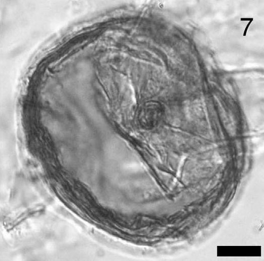

CYSTS LIST
- Alexandrium catenella
- Alexandrium kutnerae
- Alexandrium margalefi
- Alexandrium minutum
- Alexandrium peruvianum
- Alexandrium pseudogoniaulax
- Alexandrium tamarense
- Alexandrium taylori
- Alexandrium spp.
- Archaeperidinium bailongense, cyst of
- Archaeperidinium constrictum, cyst of
- Archaeperidinium minutum, cyst of
- Archaeperidinium monospinum, cyst of
- Archaeperidinium saanichi, cyst of
- Archaeperidinium sp., cyst of
- Ataxiodinium choane
- Ataxiodinium confussum
- Ataxiodinium zevenboomii
- Ataxiodinium sp.
- Biecheleria baltica
- Biecheleria cincta
- Biecheleria sp.
- Bitectatodinium spongium
- Bitectatodinium tepikiense
- Bitectatodinium sp.
- Brigantedinium assymmetricum
- Brigantedinium auranteum
- Brigantedinium cariacoense
- Brigantedinium majusculum
- Brigantedinium simplex
- Brigantedinium sp.
- Caspidinium rugosum
- Cryodinium matsuokai
- Cryodinium sp.
- Cryodinium meridianum
- Dalella chathamensis
- Diplopelta symmetrica, cyst of
- Dubridinium caperatum, cyst of
- Dubridinium cassiculum, cyst of
- Dubridinium cavatum, cyst of
- Dubridinium ulsterum, cyst of
- Dubridinium spp., cyst of
- Echinidinium aculeatum
- Echinidinium bispiniformum
- Echinidinium delicatum
- Echinidinium karaense
- Echinidinium granulatum
- Echinidinium sleipnerensis
- Echinidinium transparantum
- Echinidinium zonneveldiae
- Gymnodinium catenatum, cyst of
- Gymnodinium inusitatum, cyst of
- Gymnodinium microreticulatum, cyst of
- Gymnodinium nolerii, cyst of
- Gymnodinium trapeziforme, cyst of
- Impagidinium aculeatum
- Impagidinium caspienense
- Impagidinium pallidum
- Impagidinium paradoxum
- Impagidinium patulum
- Impagidinium plicatum
- Impagidinium sphaericum
- Impagidinium strialatum
- Impagidinium variaseptum
- Impagidinium velorum
- Islandinium brevispinosum
- Islandinium? cezare
- Islandinium minutum
- Leipokatium invisitatum
- Lejeunecysta acuminate
- Lejeunecysta adeliensis
- Lejeunecysta attenuata
- Lejeunecysta beinenensis
- Lejeunecysta catomus
- Lejeunecysta communis
- Lejeunecysta cowiei
- Lejeunecysta epidoma
- Lejeunecysta fallax
- Lejeunecysta globosa
- Lejeunecysta granosa
- Lejeunecysta hyalina
- Lejeunecysta katatonos
- Lejeunecysta lata
- Lejeunecysta marieae
- Lejeunecysta oliva
- Lejeunecysta paratenella
- Lejeunecysta pulchra
- Lejeunecysta rotunda
- Lejeunecysta sabrina
- Lejeunecysta sp.
- Lingulodinium machaerophorum
- Nematosphaeropsis labyrinthus
- Nematosphaeropsis lemniscata
- Nematosphaeropsis rigida
- Nematosphaeropsis scala
- Nematosphaeropsis spp.
- Nia acanthocysta
- Oblea acathocysta, cyst of
- Operculodinium aguinawense
- Operculodinium centrocarpum
- Operculodinium israelianum
- Operculodinium janduchenei
- Operculodinium longispinigerum
- Operculodinium piaseckii
- Operculodinium tegillatum
- Operculodinium microtriainum
- Operculodinium sp.
- Pentapharsodinium dalei
- Peridinium ponticum
- Polykrikos kofoidii, cyst of
- Polykrikos schwartzii, cyst of
- Polykrikos hatmannii, cyst of
- Polykrikos quadratus, cyst of
- Polykrikos sp., cyst of
- Polysphaeridium zoharyi
- Protoperidinium americanum, cyst of
- Protoperidinium conicoides, cyst of
- Protoperidinium fukuyoi, cyst of
- Protoperidinium lewisiae, cyst of
- Protoperidinium monospinum, cyst of
- Protoperidinium parthenopes, cyst of
- Protoperidinium thulensense, cyst of
- Protoperidinium tricingulatum, cyst of
- Pyxidinopsis psilata
- Pyxidinopsis reticulata
- Qia_lebouriae
- Quinquecuspis concreta
- Scrippsiella acuminata
- Scrippsiella crystallina
- Scrippsiella erinaceus
- Scrippsiella spinifera
- Scrippsiella triffida
- Scrippsiella trochoidea
- Selenopemphix antarctica
- Selenopemphix armageddonensis
- Selenopemphix brevispinosum
- Selenopemphix brinkhuisii
- Selenopemphix conspicua
- Selenopemphix coronata
- Selenopemphix crenata
- Selenopemphix dionaeacysta
- Selenopemphix islandensis
- Selenopemphix nephroides
- Selenopemphix quanta
- Selenopemphix tholus
- Selenopemphix undulata
- Selenopemphix sp.
- Spiniferites alaskensis
- Spiniferites asperulus
- Spiniferites belerius
- Spiniferites bentorii
- Spiniferites cruciformis
- Spiniferites delicatus
- Spiniferites elongatus
- Spiniferites frigidus
- Spiniferites hainanensis
- Spiniferites hyperacanthus
- Spiniferites lazus
- Spiniferites ludhamensis
- Spiniferites membranaceus
- Spiniferites mirabilis
- Spiniferites multisphaerus
- Spiniferites pachydermus
- Spiniferites pacificus
- Spiniferites spinatus
- Spiniferites splendidus
- Spiniferites ramosus
- Stelladinium abei
- Stelladinium bifurcatum
- Stelladinium denticulatum
- Stelladinium reidii
- Stelladinium robustum
- Stelladinium stellatum
- Stelladinium spp.
- Tectatodinium pellitum
- Trinovantedinium applanatum
- Trinovantedinium ferugnomatum
- Trinovantedinium glorianum
- Trinovantedinium harpagonium
- Trinovantedinium pallidifulvum
- Trinovantedinium variabile
- Trinovantedinium sp.
- Tuberculodinium vancampoae
- Votadinium bengalensis
- Votadinium calvum
- Votadinium concavum
- Votadinium elongatum
- Votadinium nanhaiense
- Votadinium pontifossatum
- Votadinium psilodora
- Votadinium reidii
- Votadinium rhomboideum
- Votadinium spinosum
- Xandarodinium xanthum
DUBRIDINIUM SPP.
IMAGES:
| 1 | 2 | 3 |
| 4 | 5 |  6 6 |
 7 7 |
 8 8 |
9 |
| 10 | 11 | 12 |
| 13 | 14 | 15 |
IMAGES REFERENCE:
1. Dubridinium spp. Bright-field photomicrographs of selected dinoflagellate cysts from the SBB. Cyst encased in thecae of Diplopsalidaceae, UVic 10-55, slide 2, V60/0; apical surface. Scale bar: 10 um. (Bringué et al., 2013 - Plate I. Figure 7).
2. Dubridinium spp. Photomicrographs of the most important aquatic palynomorphs from Arroyo Baliza site. LGCAB22: S20/3. Scale bar: 10 um. (Candel et al., 2017 - Figure 2).
3. Dubridinium spp. Bright-field photomicrographs. Single specimen, 82-3A. Scale bar: 10 um. (Van Hauwaert, 2016 - Plate III. Figure 15).
4. Dubridinium spp. Bright-field photomicrographs. Single specimen, 82-3A. Scale bar: 10 um. (Van Hauwaert, 2016 - Plate III. Figure 16).
5. Dubridinium spp. Bright-field photomicrographs, indet, NBH324, slide 1, D38/1, apical view. Scale bar: 10 um. (Pospelova et al., 2005 - Figure 5-7)
6. Dubridinium spp. Bright-field photomicrographs, CPB, slide 2, apical surface. Scale bar: 10 um. (Pospelova et al., 2005 - Figure 5-8)
7. Dubridinium spp. Bright-field photomicrographs, NBH236, slide 4, apical surface. Scale bar: 10 um. (Pospelova et al., 2005 - Figure 5-9)
8. Dubridinium spp. Bright-field photomicrographs of selecte dinoflagellate cysts and marine palynomorphs found in surface sediments from southern South Korea. Scale bar: 10 um. (Pospelova & Kim, 2010 - Plate 2-E).
9. Dubridinium spp. Bright-field photimicrographs, UVic 09-404, slide 1, T51/3; dorsal surface. Scale bar: 20 um. (Price & Pospelova, 2011 - Plate II. Figure 3).
10. Dubridinium spp. Bright-field photomicrographs of selected heterotrophic dinoflagellate cysts, sample UVic 2018-32, slide 1. Scale bar: 10 um. (Over, 2019 - Plate IV. Figure C).
11. Dubridinium spp. Heterotrophic dinoflagellate cysts (Mejía, 2015 - Figure 16).
12. Dubridinium spp. Dinoflagellate cysts identified in three cores of studied sediment (CTB, KP60BIS & PD24). Scale bar: 10 um. PD24-159b: X8/4. Lower surface. (Franco, 2018 - Slide 6-M).
13. Dubridinium spp. Dinoflagellate cysts identified in three cores of studied sediment (CTB, KP60BIS & PD24). Scale bar: 10 um. PD24-159b: X8/4. Lower/Mid surface. (Franco, 2018 - Slide 6-N).
14. Dubridinium spp. Dinoflagellate cysts identified in three cores of studied sediment (CTB, KP60BIS & PD24). Scale bar: 10 um. PD24-159b: X8/4. Mid/Upper surface. (Franco, 2018 - Slide 6-O).
15. Dubridinium spp. Dinoflagellate cysts identified in three cores of studied sediment (CTB, KP60BIS & PD24). Scale bar: 10 um. PD24-159b: X8/4. Upper surface. (Franco, 2018 - Slide 6-P).
BIBLIOGRAPHY:
- Bringué, M., Pospelova, V., & Pak, D. (2013). Seasonal production of organic-walled dinoflagellate cysts in an upwelling system: a sediment trap study from the Santa Barbara Basin, California. Marine Micropaleontology, 100, 34-51.
- Candel, M. S., Louwye, S., & Borromei, A. M. (2017). Reconstruction of the late Holocene paleoenvironment of the western Beagle Channel (Argentina) based on a palynological analysis. Quaternary international, 442, 2-12.
- Franco Arias, D. A. (2018). Reconstrucción de cambios paleoambientales en el estuario de Bahía Blanca y áreas adyacentes de la plataforma durante el Holoceno a través de registros palinológicos, sedimentológicos y geocronológicos.
- Mejía, C. G. S. (2016). Registro palinológico en sedimentos laminados de la cuenca San Lázaro, Baja California sur y su relación con cambios paleoceanográficos y paleoclimáticos de 1988 a 2009.
- Over, J. S. R. (2019). Last interglacial (MIS 5e) sea surface hydrographic conditions in coastal southern California based on dinoflagellate cysts (Doctoral dissertation).
- Pospelova, V., Chmura, G. L., Boothman, W. S., & Latimer, J. S. (2005). Spatial distribution of modern dinoflagellate cysts in polluted estuarine sediments from Buzzards Bay (Massachusetts, USA) embayments. Marine Ecology Progress Series, 292, 23-40.
- Pospelova, V., & Kim, S. J. (2010). Dinoflagellate cysts in recent estuarine sediments from aquaculture sites of southern South Korea. Marine Micropaleontology, 76(1-2), 37-51.
- Price, A. M., & Pospelova, V. (2011). High-resolution sediment trap study of organic-walled dinoflagellate cyst production and biogenic silica flux in Saanich Inlet (BC, Canada). Marine Micropaleontology, 80(1-2), 18-43.
- Van Hauwaert, T. (2016). Recent dinoflagellate cysts from the Chesapeake Estuary (Maryland and Virginia, USA): taxonomy and ecological preferences (Doctoral dissertation, M. Sc. Thesis, Ghent University, Ghent, Belgium).